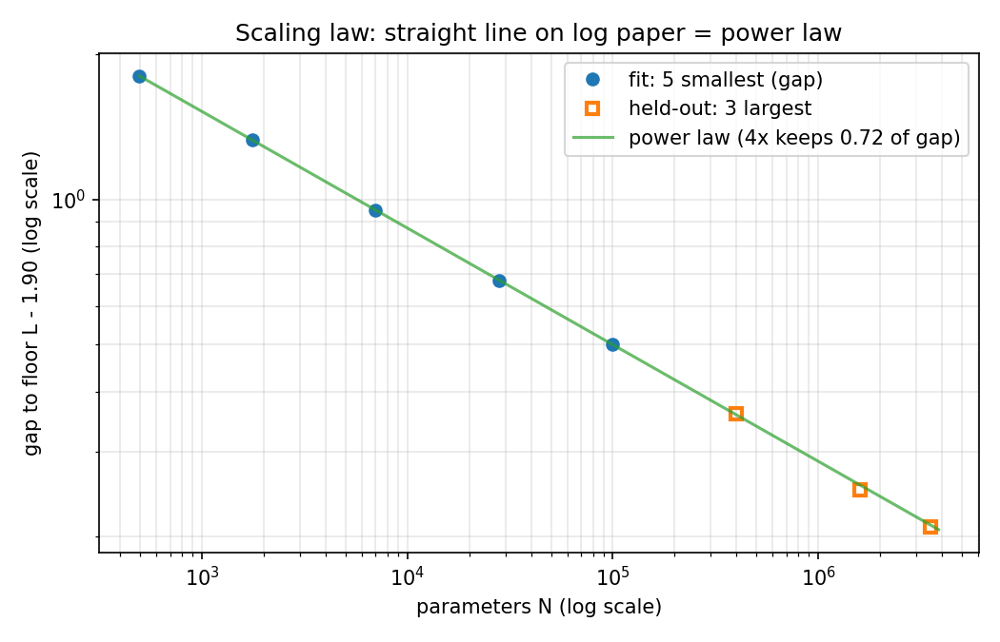
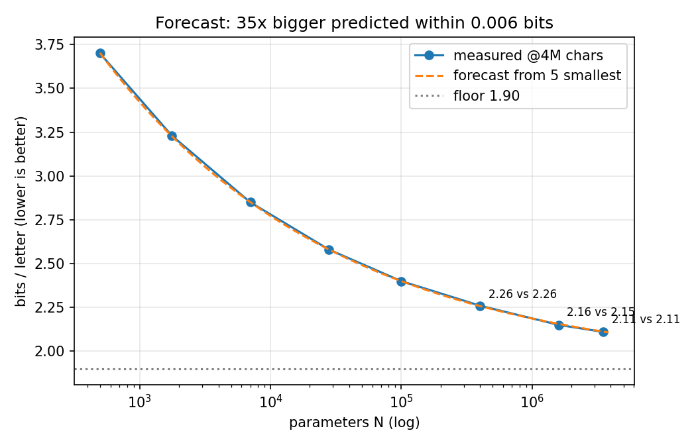
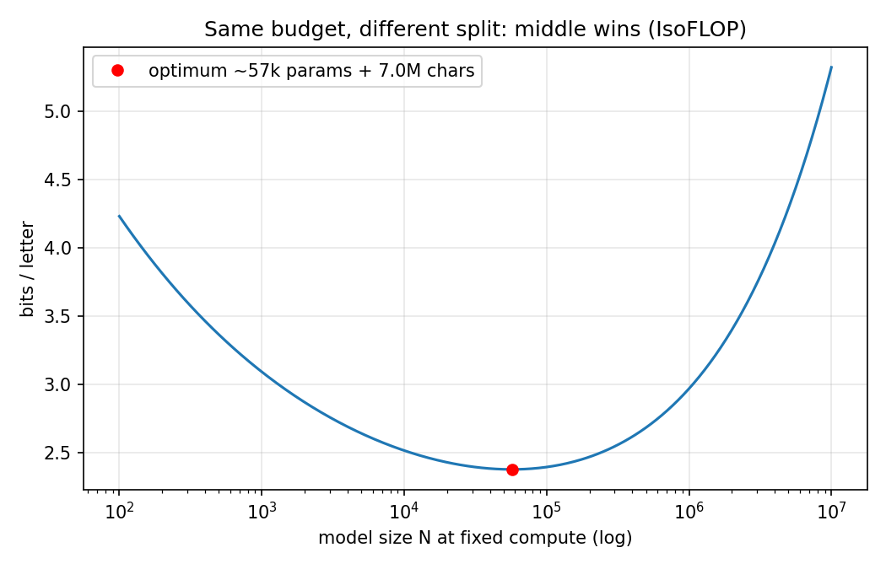

Let's work this out in a step-by-step way to be sure we have the right answer.
Step 0 — the game
I show you the . Which letter is next? Give all 27 letters a chance % (a–z + space = 100).
othe → almost all on r. After a space → spread out. That spreader is a language model.Step 1 — the score (bits)
Halve from 100% to the true letter's chance and count: 50%→1, 25%→2, 90%→0.15 bits. Average = bits/letter (lower better).
Anchors: 4.75 knowing nothing · 4.12 knowing frequencies · ~4.76 fresh random net.Step 2 — the box
Only a list of numbers inside (496 → 3.5M). Learning nudges each so true letters get more chance. One pass over text (~8 novels for 4M chars).Step 3 — bigger wins, gains shrink
Sizes ×4 each step: 3.61 → … → 2.14. First step +0.4, later <0.1. Naive "×0.89 each step" fails (0.89→0.91→0.93).Step 4 — the floor trick ⭐
Scores level above a floor (~1.90). Measure gap = score − floor: 4× size leaves ~0.72 of gap, every step.
Straight line on log paper = power law. Fit on 5 smallest → predict 3 biggest (35×) within 0.006 bits.Step 5 — floor = text, not model
More text lowers floor: 1.90 (4M) → 1.73 (16M) → 1.64 (64M). Formula: score = 1.56 + size-part + text-part.
4× size keeps 0.71 of its part, 4× text keeps 0.50. Cost ≈ 6 × params × chars.Step 6 — fixed budget: middle wins
Same computer, five splits: huge+short 3.45 · tiny+long 2.66 · middle (57k + 7M) 2.38 wins.
10× budget → model ×5, text ×2. Each training must plan its own schedule or short runs look 0.13 worse.
0.72 gap kept per 4× size
0.006 bits forecast error (35×)
57k + 7M best split at this budget
5 min CPU to reproduce (fast)
📊 Verified charts + playground
Numbers below are the repo's machine outputs (results/paper_fits.json).
Straight line = power law

Forecast 35× ahead

Same budget: middle wins

🎛️ Playground — drag model size, see predicted score